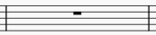
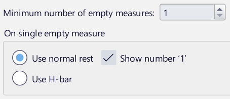
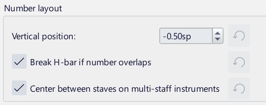
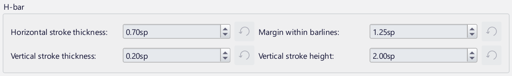
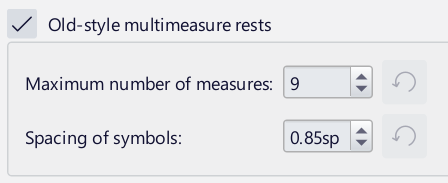
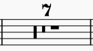

Bar and multibar rests
Measure rests
A measure rest looks like a whole rest, but is centered within a measure and indicates that the entire measure (or a voice within it) is silent:

It is commonly used in all meters (except 4/2 and 8/4, which often use double whole rests instead).
To create one or more full measure rests
Use the following method if all selected measures are 'standard' i.e. with no custom durations:
- Select a measure, or range of measures
- Press
Del(Mac:Backspace).
If one or more of the measures contains a custom duration, use the following method instead:
- Select a measure, or range of measures
- Press
Ctrl+Shift+Del(Mac:Cmd+Shift+Backspace).
To create a full measure rest in a particular voice
- In the appropriate voice, enter a rest that extends for the full measure
- Make sure the rest is selected, then press
Ctrl+Shift+Del(Mac:Cmd+Shift+Backspace).
If the voice contains only rests you can select the first rest and invoke the conversion keystroke.
Multibar rests
A multimeasure rest is used to indicate a run of empty measures, the number of measures being shown by a figure above/below the staff. The thick bar drawn on the staff is called an H-bar.

Enabling and disabling multimeasure rests
Multimeasure rests can be turned on or off with the shortcut Ctrl+Shift+M (Mac: Cmd+Shift+M), or by checking Multimeasure rests in Format -> Style -> Rests.
Multimeasure rests can be turned on/off independently in the score and instrument parts. (By default, they are off in scores and on in parts.)
By default, if multimeasure rests are enabled, any sequence of two or more empty measures is automatically converted to multimeasure rests. You can change the minimum number of empty measures needed before they are combined into a multimeasure rest; see Multimeasure rest style, below.
Breaking multimeasure rests
Multimeasure rests are automatically broken at important points, such as double barlines, rehearsal marks, key signature or time signature changes, section breaks etc.
However, you can opt to break a multimeasure rest elsewhere as follows.
- Disable multimeasure rests in the score or part
- Right-click on the measure where you want the multimeasure rest to break, and select Measure properties
- In the dialog, check Break multimeasure rest
- Click OK
- Re-enable multimeasure rests.
Multimeasure rest properties
You can edit properties of multimeasure rests in the Multimeasure rest section of the Properties panel:
- Show number: Whether to show the number of measures
- Number offset: Adjust the vertical position of the multimeasure number relative to its default position.
Multimeasure rest style
Extensive style settings for multimeasure rests are available in Format -> Style under Rests then Multimeasure rests. To change any of the settings, the box next to Multimeasure rests must be checked.

- Minimum number of empty measures: the number of consecutive empty measures required before a multimeasure rest is created. The default is 1, which may seem illogical, but this is because a single measure rest may still be treated as a multimeasure rest in terms of styling and spacing. If you wish to use multimeasure rests but do not want single-measure rests to be considered multimeasure rests in any way, set this value to 2 (or higher).
- On single empty measure (these options are only available if Minimum number of empty measures is set to 1):
- Use normal rest: notate as a normal rest (usually a whole rest). The Show number '1' checkbox specifies whether a '1' should appear.
- Use H-bar: use an H-bar instead. This option will be unavailable if Old-style multimeasure rests is turned on.

Multimeasure rests generally require more horizontal space the more measures they contain. These options give you control over how exactly this should happen.
- Proportional to time signature: the width of multimeasure rests will vary according to their time signature; for example, a 2-bar rest in 4/4 will require more space than a 2-bar rest in 3/4
- Fixed, based on time signature of...: the width of multimeasure rests will not vary according to their time signature; for example, all 2-bar rests will require the same amount of space. You can specify the time signature that is the basis for this calculation. The default, 2/4, means that a single measure rest (when treated as a multimeasure rest) will require the same space as an empty 2/4 measure.
- Minimum width: the minimum width of a multi-measure rest
- Cap width after: multimeasure rests will stop requiring any extra space once they exceed this number of measures.

- Vertical position: the default vertical position of the number (by default, half a space above the staff)
- Break H-bar if number overlaps: whether the H-bar should be broken when the number is offset to overlap it
- Center between staves on multi-staff instruments: if checked, when a multimeasure rest occurs on an instrument with multiple staves the number will appear centered between each pair of adjacent staves (the Vertical position setting will not apply). If unchecked, the number will appear on each stave.

- Horizontal stroke thickness: the thickness of the horizontal stroke of an H-bar
- Margin within barlines: the distance between the barline and the vertical stroke of the H-bar, at either end
- Vertical stroke thickness: the thickness of the vertical strokes that appear at either end of the H-bar
- Vertical stroke height: the height of the vertical strokes of the H-bar.

Old-style multimeasure rests are indicated as combinations of whole and double-whole rests. To use this style, check the box, and the following options become available:
- Maximum number of measures: the maximum number of measures to notate in this manner. After this point, an H-bar will be used
- Spacing of symbols: the distance between the symbols of the rest.

An example of an old-style multimeasure rest
See also
Other measure-related pages: